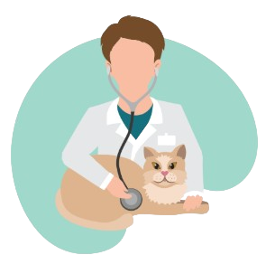

☰
Vida de Bicho
SIMULAR PLANO
Como funciona o plano médico veterinário
02.
Identificação PET
Após a contratação do plano, seu pet vai
receber uma carteirinha que vai orientar o veterinário na hora do atendimento e possibilitar o
acompanhamento do histórico clínico pelo nosso site. O veterinário terá acesso imediato ao prontuário do seu
pet e poderá oferecer um atendimento muito mais assertivo.
Muita praticidade e segurança para você e seu pet.
03.

Atendimentos
Para ser atendido na nossa rede credenciada basta informar o CPF do
titular do plano na hora do atendimento.
Simples, rápido e sem burocracia.

04.
Emergência
Em situações de emergências você pode contar tanto com os
veterinários da nossa rede credenciada quanto não credenciados.
Entendemos que em situações graves o mais importante é a saúde do
seu pet. Por isso, existe a opção de reembolso parcial em situações de
emergência, quando não é possível ir até um credenciado
05.
Acompanhamentos
Você pode acessar todo o histórico clínico do seu amigo pelo site.
Com acompanhamento frequente seu pet vive mais e melhor.